The furniture that is left.
The objects are done (the brief's screenshot is this site's own oak). What still reads as a template is smaller: the controls are stock web UI, a few small parts repeat, and paper never answers the hand. Six fixes, no new drawings, no redesign. Audit: audit.md.
1 · The one button becomes a ticket
- "See what I've built", "Watch it grow" and "Send the postcard" become one printed ticket: punched notches, a perforation, a stub with the arrow (▸ for the show, ✉ for the postcard). Same --control fill, 48px, same words.
- Hover tears the stub 4°; press punches it 1px. The focus ring is drawn by a wrapper, since the notch mask would cut an outline.
- The quiet action beside it ("Send me a postcard") draws the nav's ink swash under itself on hover and focus.
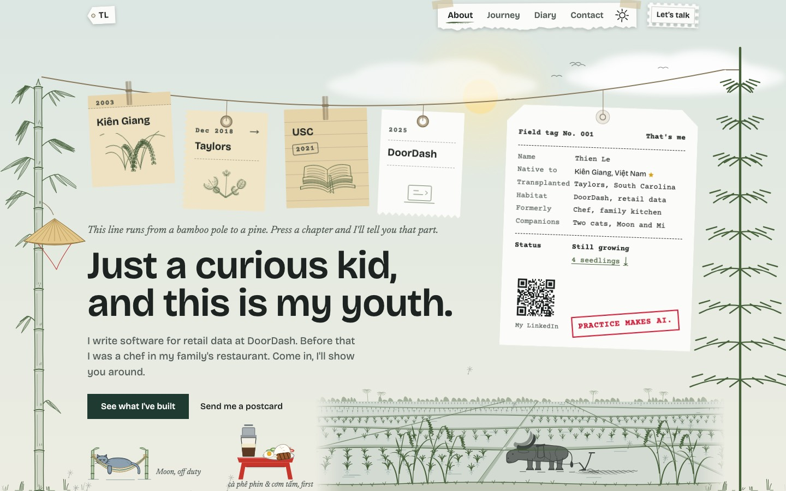
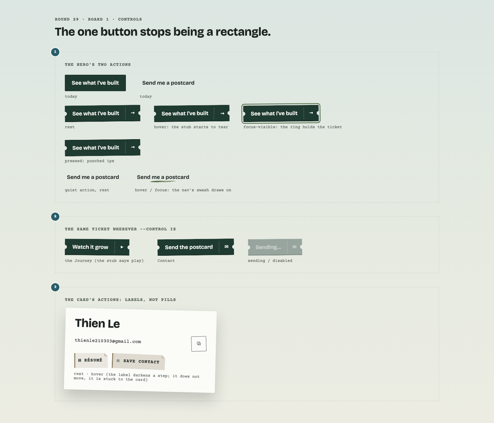
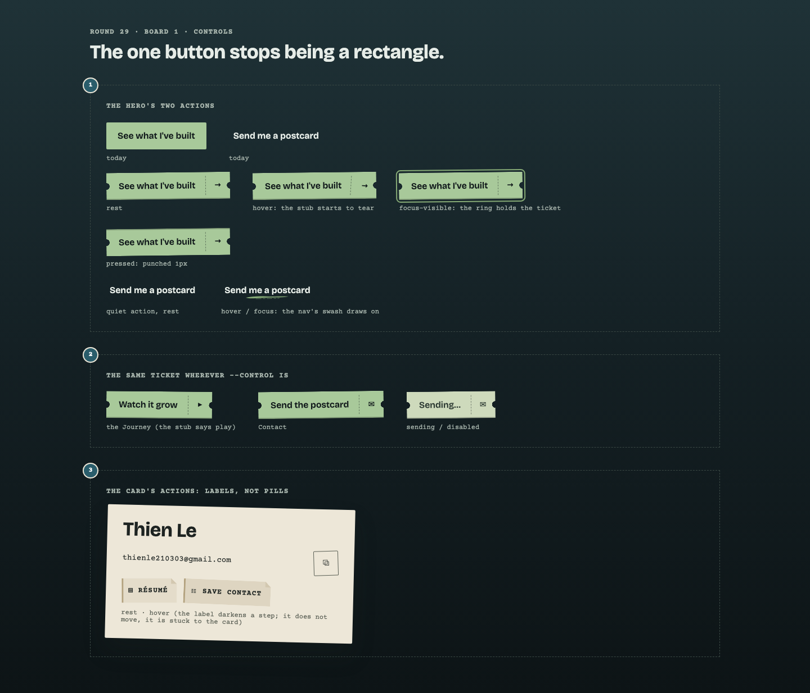

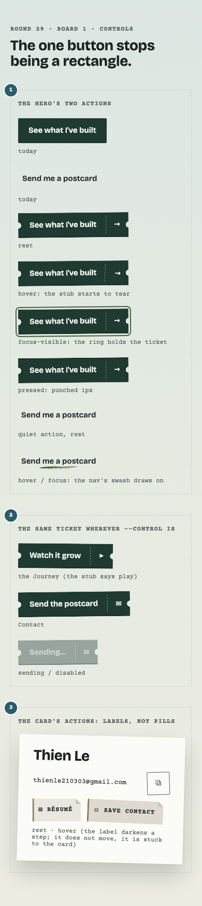
2 · The card's actions are labels, not pills
- "Résumé" and "Save contact" become dog-eared index labels with a twine edge; the round copy button a small square stamp. The last `rounded-full` controls on the site go.
3 · The Ask is a notepad sheet, not a form on paper
- The pad's glued head along the top, the sheet torn off along it.
- Ruled lines and a margin rule in --rule (not red: one mark per screen).
- The suggestions are jotted in my handwriting, one to a line, a dash before each; the wavy ink underline on hover and focus.
- "Ask" is an ink stamp at the end of the question's line.
- The columns meet at a fold, not a dashed rule. Behaviour, heights and the clippings unchanged.
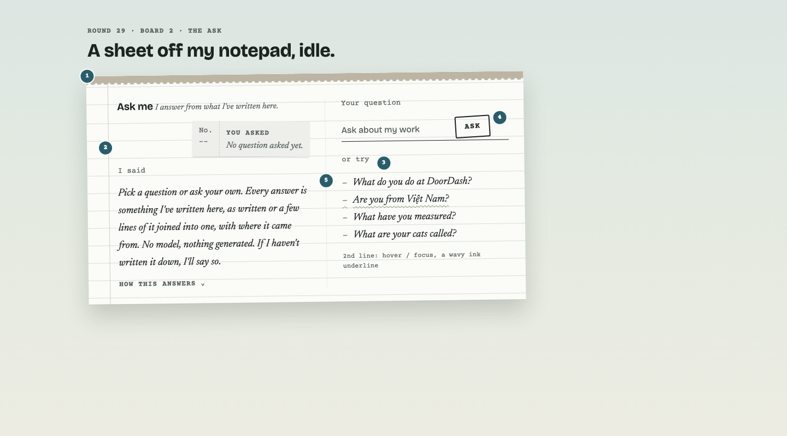
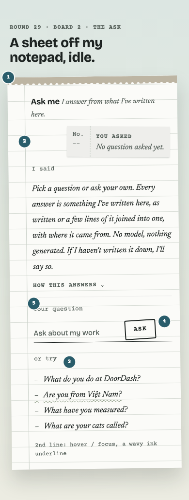
4 · Diary page 1: paper by kind, mount by place
- Work is a time card (cut corners, punched head), Study an index card (head ruled twice), Milestone a ribbon's swallowtail. The shape repeats the kind dot, so colour is no longer the only carrier.
- Mounts are authored per place, like the oak's TAG_LOOKS: tape, tape across a corner, the paper clip, photo corners.
- Slice, strings, links, text and positions unchanged.
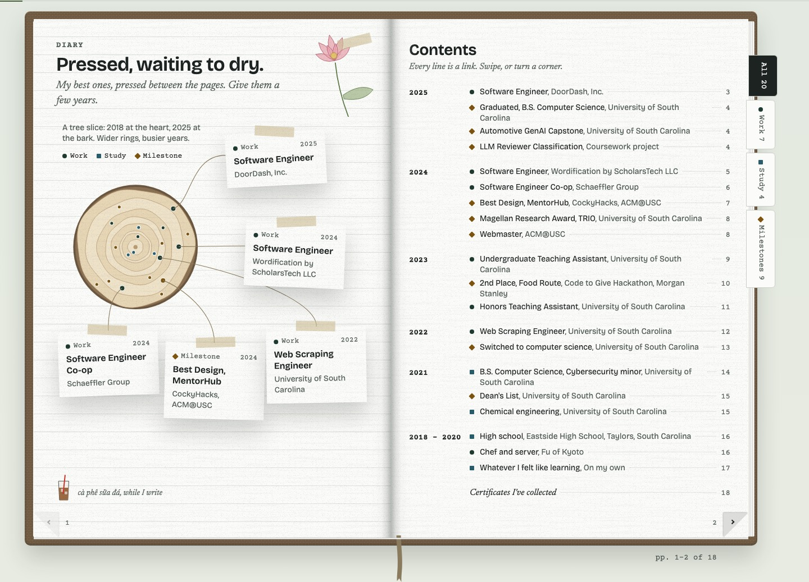
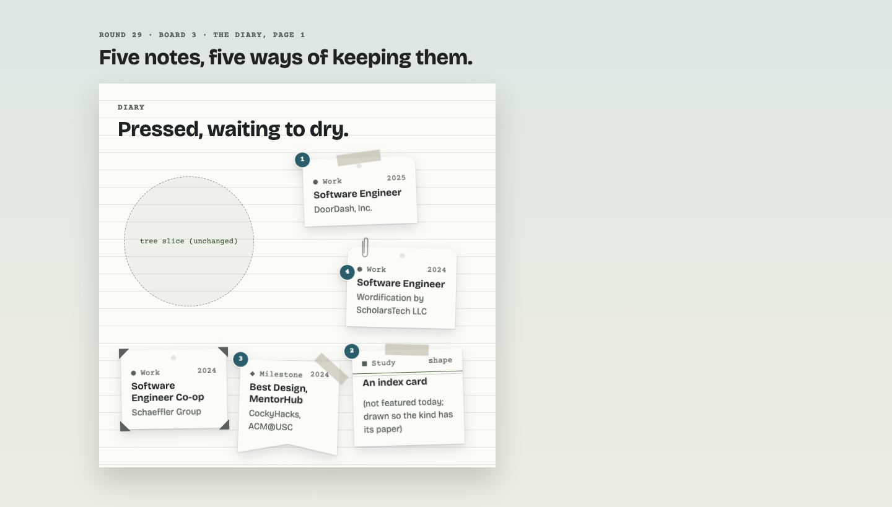
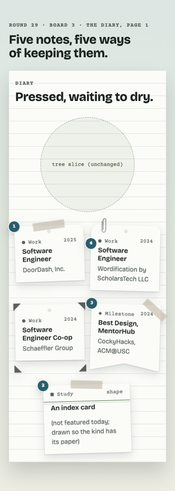
5 · Paper answers the hand
- Hero chapters, oak tags, seedling markers and Diary notes lift on hover (where there is hover) and on focus-visible: 4px up, tilt eased toward level, a deeper drop-shadow, 200ms --ease-ink. Hanging paper swings once about its hole; the string never moves.
- Press sets it back down before the flip or the jump.
- Reduced motion: the shadow alone. Touch: no change. Translate and rotate only, so nothing reflows and CLS stays 0.
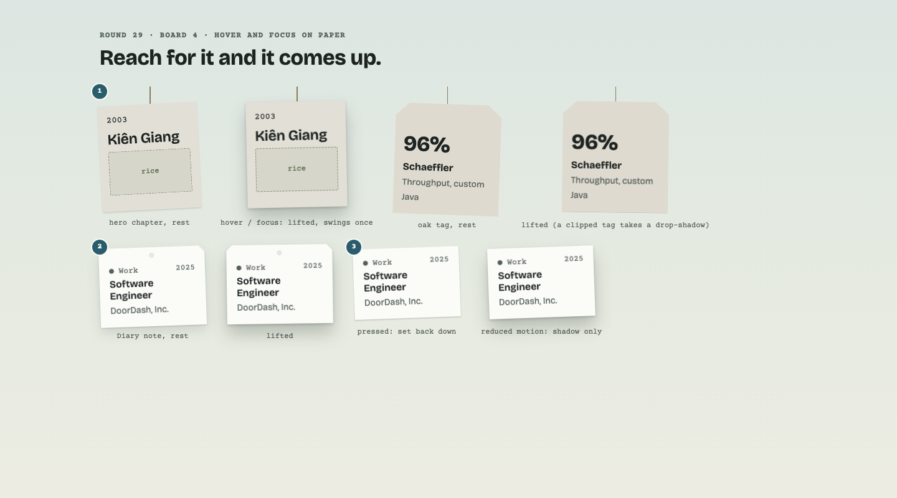
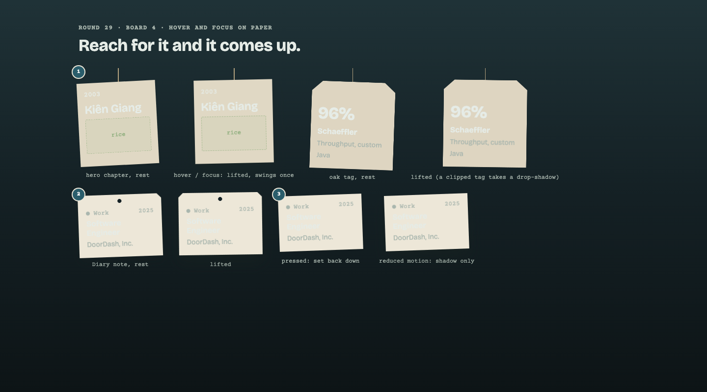
6 · The page ends on the ground
- The footer becomes the bank: soil in --scene-bark with an unruled top edge, and the hero's own bank-grass standing on it in --scene-moss. Same line of text, nothing added.
- A new text pairing (a proposed --soil-ink alias, both themes), added to `pnpm contrast`; it must clear 4.5:1.
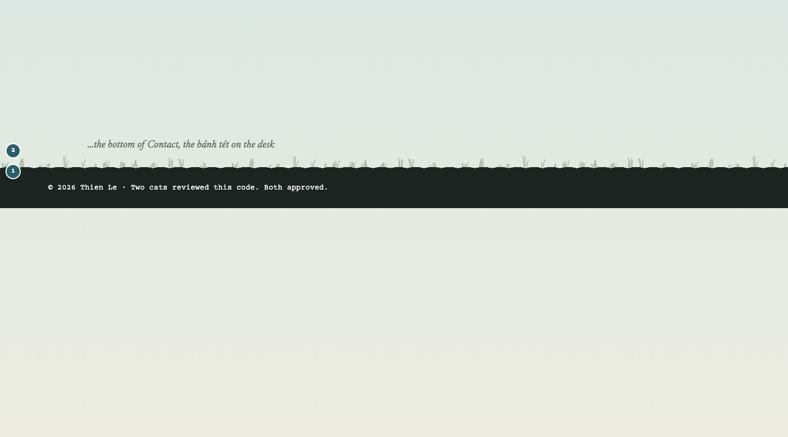
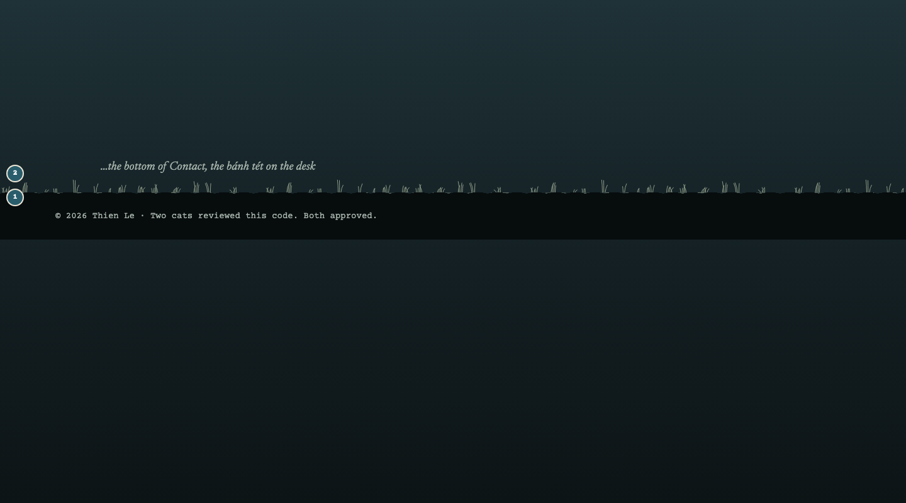
Decisions that are Thien's
- 1, the ticket. One ticket for every --control (recommended), or the hero's button alone.
- 1, the stub's glyphs. → / ▸ / ✉ per action (recommended), or → everywhere.
- 4, Diary notes. Shape by kind plus authored mounts (recommended), or mounts only and keep one paper.
- 5, the swing. Lift and one swing for hanging paper (recommended), or lift only.
- 6, the footer. The bank (recommended), or leave the footer as it is.
- Anything you'd cut. Each of the six ships on its own.